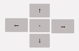
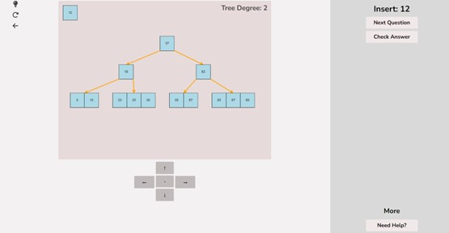
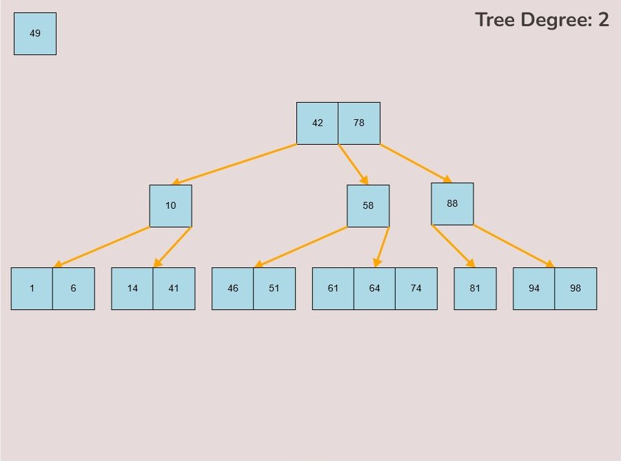
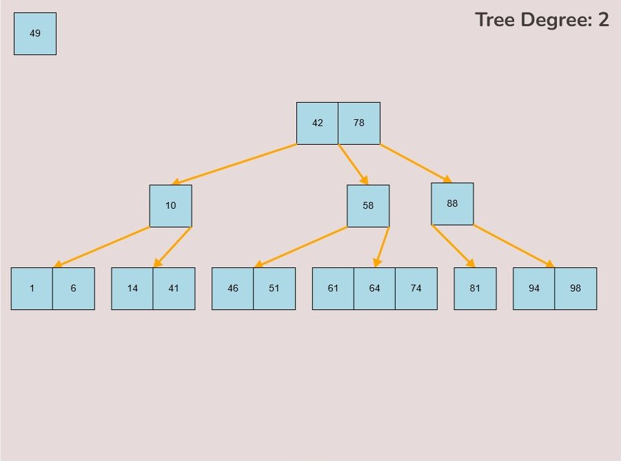

Custom Creation:
This section of the User Guide will take you through the steps of creating/randomly generating your own B-Tree to practising questions on that B-Tree.
- 1.1) Custom B-Tree Creation
- 1.2) Random B-Tree Creation
- 1.3) Save and Load a B-Tree
- 1.4) Questions on Created B-Tree (Random or Custom)
B-Tree Creation
When entering the Custom Tree Creation Menu you will be greeted with the following page. From here you will have all the tools you need to create your custom/randomly generated B-Tree.
To navigate back to the main menu select the Back button located on the top left of the screen. The light bulb on the top left of the screen will switch the application in and out of dark mode.

The arrow and centre(.) buttons will move the B-Tree around within the canvas and the centre button will move it to the centre of the canvas.

To get help with using the software, select the “Need Help” button and the following pop up will appear where you can view a quick guide to the software.
1.1) Custom B-Tree Creation
To create a custom B-Tree you will use the tools in the figure below. In order to create a new B-Tree you will need to select the “Max Degree” input box and insert a numerical value between 2 and 4. Once entering the value, select the “Custom Tree” button.
After selecting the “Custom Tree” button, the canvas should allow you to insert/delete keys as seen in the figure below.
To insert keys, select the “Insert” input box and insert a numerical value and then click the “Insert” button. Once completed, you will see a key pop up in the canvas and this can be seen in the left image. After continually inserting values, you will eventually have a B-Tree that looks as you desire, this B-Tree will be restructured automatically and requires no user input to change it.
If you made a mistake or you would like to remove a key, you can use the delete feature. To delete keys, select the “Delete” input box and insert a numerical value (that already exists within the B-Tree) and then click the “Delete” button. Once completed, you will see the desired key removed from the B-Tree. The deletion from the B-Tree will cause it to be restructured automatically and requires no user input to change it. For example, removing 22 from the B-Tree above:
1.2) Random B-Tree Creation
To create a randomly generated B-Tree you will use the tools in the figure below. In order to create a new randomly generated B-Tree you will need to select the “Max Degree” input box and insert a numerical value between 2 and 4. You will need to select the “Num Keys” input box and insert a numerical value between 1 and 100.
To use a seed to generate your random B-Tree, you will need to select the “Seed” input box and insert a numerical and select the “Use Seed” Checkbox. Essentially all this does is create a B-Tree using a particular seed.
Once entering the values described above, select the “Random Tree'' button. After selecting the “Random Tree” button, the canvas should allow you to insert/delete keys as seen in the figure below and it will create a randomly generated B-Tree on the canvas. After generating the random B-Tree you can use the insert and delete key functionality to further customise your randomly generated B-Tree.
To insert keys, select the “Insert” input box and insert a numerical value and then click the “Insert” button. Once completed, you will see your key inserted into the B-Tree, the B-Tree will be restructured automatically and requires no user input to change it.
To delete keys, select the “Delete” input box and insert a numerical value that already exists in the B-Tree and then click the “Insert” button. Once completed, you will see your key removed from the B-Tree, the B-Tree will be restructured automatically and requires no user input to change it.
1.3) Save and Load a B-Tree
To save and load a B-Tree, you will need to use the buttons displayed below.
To save a B-Tree that you have created, you will need to select the “Save” button. After saving the B-Tree, it will automatically download a text file to your device containing the contents used to create the B-Tree.
To load a B-Tree you will need to select the “Load” button. After selecting the button, a pop up to your field will be displayed. From here, you can select the text file of the B-Tree you would like to load. After selectin the file and opening it, the B-Tree will be created within the canvas area.
1.4) Questions on Created B-Tree
After creating/generating your custom B-Tree, you can then answer questions on it. To do this, select the “Generate Questions on Tree” button.
After selecting this button you will be greeted with the following screen. As soon as the screen loads, you will be prompted with a question to perform on the B-Tree. You can use sections 3 and 4 in the user guide to help you complete these operations.
Once you have completed the operation, select the “Check Answer” button. From here, one of two things may happen.
The first option is that the operation you performed may be incorrect. In this case you will be notified and you will have the chance to see the correct answer by selecting the “Show Correct Answer”.
The second option is that the operation you performed may be correct. In this case you will be notified and then a new question will be generated and the tree will be reset back to the original one created by you.
Note how a new question was created, from here you can perform the new question. If you get stuck during a question and would like to retry it, you can select the retry button situated at the top left of the screen.
You can navigate back the custom tree creation by selecting the back button. You can also access the help menu by selecting the button as seen below.
Custom B-Tree Creation
To create a custom B-Tree you will use the tools in the figure below. In order to create a new B-Tree you will need to select the “Max Degree” input box and insert a numerical value between 2 and 4. Once entering the value, select the “Custom Tree” button.
After selecting the “Custom Tree” button, the canvas should allow you to insert/delete keys as seen in the figure below.
To insert keys, select the “Insert” input box and insert a numerical value and then click the “Insert” button. Once completed, you will see a key pop up in the canvas and this can be seen in the left image. After continually inserting values, you will eventually have a B-Tree that looks as you desire, this B-Tree will be restructured automatically and requires no user input to change it.
If you made a mistake or you would like to remove a key, you can use the delete feature. To delete keys, select the “Delete” input box and insert a numerical value (that already exists within the B-Tree) and then click the “Delete” button. Once completed, you will see the desired key removed from the B-Tree. The deletion from the B-Tree will cause it to be restructured automatically and requires no user input to change it. For example, removing 22 from the B-Tree above:
Random B-Tree Creation
To create a randomly generated B-Tree you will use the tools in the figure below. In order to create a new randomly generated B-Tree you will need to select the “Max Degree” input box and insert a numerical value between 2 and 4. You will need to select the “Num Keys” input box and insert a numerical value between 1 and 100.
To use a seed to generate your random B-Tree, you will need to select the “Seed” input box and insert a numerical and select the “Use Seed” Checkbox. Essentially all this does is create a B-Tree using a particular seed.
Once entering the values described above, select the “Random Tree'' button. After selecting the “Random Tree” button, the canvas should allow you to insert/delete keys as seen in the figure below and it will create a randomly generated B-Tree on the canvas. After generating the random B-Tree you can use the insert and delete key functionality to further customise your randomly generated B-Tree.
To insert keys, select the “Insert” input box and insert a numerical value and then click the “Insert” button. Once completed, you will see your key inserted into the B-Tree, the B-Tree will be restructured automatically and requires no user input to change it.
To delete keys, select the “Delete” input box and insert a numerical value that already exists in the B-Tree and then click the “Delete” button. Once completed, you will see your key removed from the B-Tree, the B-Tree will be restructured automatically and requires no user input to change it.
Questions on Created B-Tree
After creating/generating your custom B-Tree, you can then answer questions on it. To do this, select the “Generate Questions on Tree” button.
After selecting this button you will be greeted with the following screen. As soon as the screen loads, you will be prompted with a question to perform on the B-Tree. You can use sections 3 and 4 in the user guide to help you complete these operations.
Once you have completed the operation, select the “Check Answer” button. From here, one of two things may happen.
The first option is that the operation you performed may be incorrect. In this case you will be notified and you will have the chance to see the correct answer by selecting the “Show Correct Answer”.
The second option is that the operation you performed may be correct. In this case you will be notified and then a new question will be generated and the tree will be reset back to the original one created by you.
Note how a new question was created, from here you can perform the new question. If you get stuck during a question and would like to retry it, you can select the retry button situated at the top left of the screen.
You can navigate back the custom tree creation by selecting the back button. You can also access the help menu by selecting the button as seen below.
Answer Random Questions
When entering the Answer Random Questions menu you will be greeted with the following page. As soon as the screen loads, you will be prompted with a question to perform on a random B-Tree. You can use sections 3 and 4 in the user guide to help you complete these operations.

Once you have completed the operation, select the “Check Answer” button. From here, one of two things may happen.
The first option is that the operation you performed may be incorrect. In this case you will be notified and you will have the chance to see the correct answer by selecting the “Show Correct Answer”.
The second option is that the operation you performed is correct. In this case you will be notified and then a new question will be generated with a new random tree.
Note how a new question was created, from here you can perform the new question. If you get stuck during a question and would like to retry it, you can select the retry button situated at the top left of the screen.
You can navigate back the custom tree creation by selecting the back button. You can also access the help menu by selecting the button as seen below.
Manipulations:
The tree manipulation guide is an introduction into how to manipulate the B-tree to achieve the desired answer. Every possible way to manipulate the B-Tree is listed below.
- 1.1) Moving a key
- 1.2) Inserting a Key into a Node
- 1.3) Removing a Key from a Node
- 1.4) Deleting a Key
- 1.5) Moving an Entire Node
- 1.6) Establishing a Child Node Link
- 1.7) Overwriting a Child Node
- 1.8) Splitting the Root node
1.1) Moving a Key:
To move a key, follow these steps:
- Hover your mouse pointer over the key you want to move.
- Left-click and hold the mouse button to select the key.
- The colour of the key will change from light blue to a slightly darker blue to indicate that it has been selected.
- While keeping the left mouse button pressed, drag your mouse to the desired location on the canvas.
- Once you've reached the desired position for the key on the canvas, release the left mouse button to place it.
1.2) Inserting a Key into a Node:
To insert a key into a node, follow the instructions in 1.1 for selecting and moving a key. When positioning the key within the node, observe the colour change from light blue to green, signifying the key's correct placement. There are three key attachment positions within a node:
- 1.2.1. Adding to the Front of the Node:
- To attach a key to the front of the node, hover the selected key so that the right half of the key overlaps with the left edge of the node.
- The key will turn green when it's in the correct position for placement within the node.
- Release the left mouse button to place the key at the front of the node.
- 1.2.2. Adding to the End of the Node:
- To attach a key to the end of the node, hover the selected key so that the right half of the key overlaps with the left edge of the node.
- The key will change from light blue to green to indicate it's ready for placement at the end.
- Release the left mouse button to insert the key at the node's end.
- 1.2.3. Adding Between Other Keys Within the Node:
- To attach a key between two existing keys within the node, hover your mouse over the desired location between the keys.
- The selected key that you are dragging should be in between the keys that you want to place the selected key between.
- As you drag the key to the space between the keys, it will change colour to green, indicating the correct position.
- Release the left mouse button to insert the key in the desired location between the existing keys within the node.
1.3) Removing a Key from a Node:
To remove a key from a node, follow these steps:
- Locate the node containing the key you want to remove.
- Left-click on the key you wish to remove and hold down the left mouse button.
- While holding the left mouse button, drag the key away from the tree or node.
- Release the left mouse button to detach the key from the node.
1.4) Deleting a Key:
To delete a key from the tree, follow these steps:
- Locate the key you want to delete within the tree.
- Left-click on the key you wish to delete and hold down the left mouse button.
- While holding the left mouse button, drag the key to the bottom right of the canvas.
- As you move the key to this area, an "X" symbol will appear in the bottom right corner of the canvas.
- Release the left mouse button while the key is over the "X" symbol, the key will be red if it is in the correct range to delete.
- The key will be deleted from the tree entirely.
1.5) Moving an Entire Node:
Left-clicking and dragging moves individual keys, however, there may be situations where we would like to move an entire node instead of just moving individual keys.
To move an entire node, follow these steps:
- Press the spacebar to enter “move entire node” mode.
- You will be able to determine if you are within this mode if all of the first keys within every node, including free nodes, are colored green.
- Select the first key within the node that you would like to move, by left-clicking the first key within the node and holding down the left mouse button.
- Note that the only key that you can select to move an entire node is the first key within the node, and this is indicated by the green color of the first key.
- While keeping the left mouse button pressed, drag your mouse to the desired location on the canvas.
- Once you've reached the desired position for the node on the canvas, release the left mouse button to place it.
1.6) Establishing a Child Node Link:
To create a link between a child node and the tree, follow these detailed steps:
- Identify the node to which you want to attach a child node.
- Determine the keys between which you intend to establish a connection. The connection's nature is influenced by its placement in relation to these keys.
- Hover your mouse over the lower right or lower left corner of the key from which you wish to initiate the connection.
- When positioned correctly, a small red circle will appear, signaling that you can initiate a connection from this point.
- Left-click and hold down the mouse button to initiate the connection when you see the small red circle.
- Drag your mouse in the direction of the node you want to connect as a child to the tree.
- While dragging, you'll notice a yellow arrow extending from the original key location where you clicked; this arrow represents the ongoing connection process, often referred to as "connection mode."
- Additionally, during connection mode, a small red circle will appear at the middle-top of every node that can potentially serve as a child to the original node where you initiated the connection.
- To finalize the connection, while in connection mode, drag your mouse to the small red circle positioned at the top of the node you want to connect to.
- Upon hovering over the small red circle, release your mouse click to establish the connection.
- If the connection is successful, a yellow arrow will be drawn between the two nodes.

1.7) Overwriting a Child Node:
There may be cases where a connection between a parent node and child node already exists, however, you would like to overwrite this already established connection to make a new connection between the parent node and a new child node.
To overwrite a child node, follow these steps:
- Identify the parent node with the existing child node connection you want to replace.
- Determine the keys between which you intend to create the new connection, taking into account the adjusted relationship.
- Hover your mouse over the bottom right or bottom left corner of the key from which you wish to initiate the new connection.
- Once correctly positioned, a small red circle will indicate that you can initiate the connection from this location.
- Left-click and hold down the mouse button when the small red circle is visible to start the new connection.
- Drag your mouse towards the desired node you wish to connect as the new child node.
- During this process, you'll observe a yellow arrow extending from the original key location where you initiated the connection, representing the ongoing "connection mode."
- Additionally, within connection mode, a small red circle will appear at the middle-top of every node that can potentially become the new child node.
- To complete the process, while in connection mode, guide your mouse to the small red circle positioned at the top of the node you want to connect as the new child node.
- Upon hovering over the small red circle, release your mouse click to establish the new connection.
- If successful, a yellow arrow will be drawn between the parent node and the new child node, effectively overwriting the previous connection.

1.8) Splitting the Root Node:
There may be cases where you need to split the root node of the tree so that the median key of the original root becomes the single key of the new root and the keys contained in the left half of the original root become the new roots’ left child and the keys contained in the right half of the original root become the new roots’ right node.
Please note that functionality of splitting the node will only be available to the user if the root node has the maximum amount of keys i.e., (2t-1) keys.
To split the root node, follow these steps:
- Hover your mouse to the area slightly above the median key of the root node.
- If the root is available to be split then a split node symbol will appear. The symbol looks like a diverging path of three yellow arrows.
- Left click the mouse button to perform the split root function.


 
